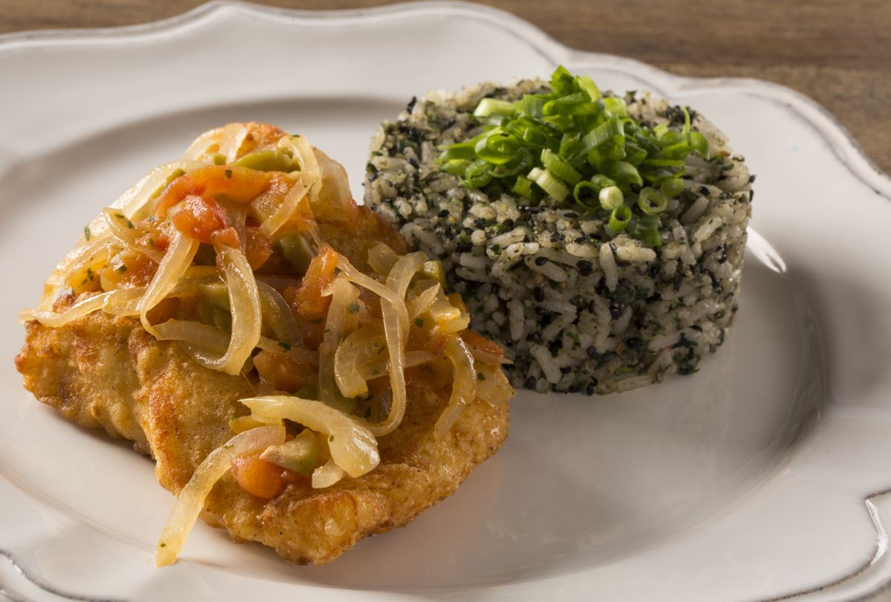
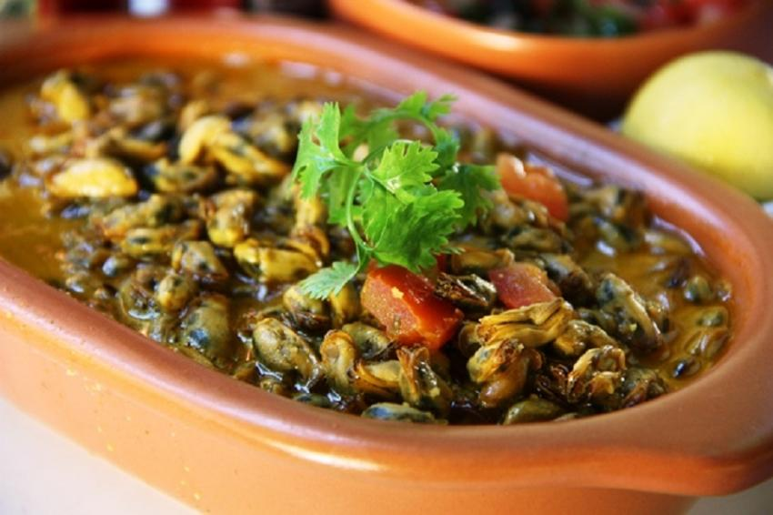
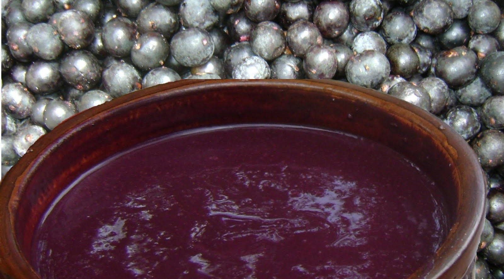

Arroz de cuxa
Provavelmente o prato mais tradicional da culinária maranhense, o arroz de cuxá é feito com a vinagreira, também conhecida como azedinha. Tradicionalmente servido como acompanhamento para frutos-do-mar, peixes fritos e ensopados, esse arroz demanda maestria em seu preparo, porque a vinagreira é uma erva ácida e amarga, o que dificulta seu preparo e exige um controle de proporções para que o arroz não fique com um gosto ruim. Mas quando bem feito, é uma experiência única para o seu paladar!
Sururu ao leite de coco
O sururu é um molusco muito consumido no litoral do Nordeste. Extremamente saboroso, permite várias combinações e na culinária maranhense ele se junta ao leite de coco para virar um ensopado parecido com uma moqueca, muito apetitoso e bem temperado com sabores típicos da região como dendê, coentro e pimenta-de-cheiro.
Juçara
O juçara é o açaí do Maranhão. As frutas, que são da mesma família, são diferentes entre si, mas são consumidas de maneira semelhante. Apesar de ser consumida com granola e banana por algumas pessoas, a maneira preferida de consumo dos maranhenses é com camarão seco e farinha d’água, podendo ser consumida até com carne de sol.